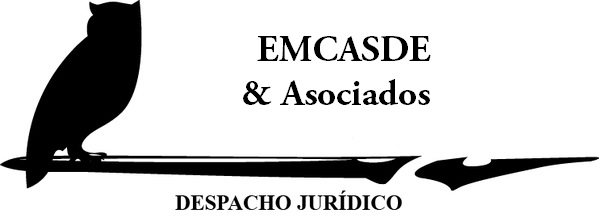

Despacho Juridico
ENCASDE

Mario Delgado
¿Quienes somos?
Nombre de la empresa
~EMCASDE~
Nuestra misión
Somos la instancia de la Secretaría General que garantiza certeza y seguridad jurídica a los actos de la Universidad y sanciona las acciones de gestión y gobernabilidad conforme la normatividad de la Red Universitaria.
Somos un despachode Abogados con más de Quince Años de experiencia, que al paso de los años se ha adaptado a las nuevas exigencias del mercado.
Nuestro equipo tiene una visión integral y multidisciplinaria de nuestra actividad, ya que los problemas de nuestros clientes abarcan diversas ramas del derecho, sin olvidar que en la práctica profesional, la especialidad la impone el problema a resolver, que significa la ampliación del conocimiento jurídico.
Los servicios que brindamos no se contraponen con los que ofrecen las grandes firmas de abogados. Queremos crecer, conforme a nuestros principios, lo que significa hacerlo con honestidad, sin menoscabar el servicio personalizado que ofrecemos actualmente. Nuestro compromiso es seguir cultivando la calidad, el profesionalismo, la cercanía en el trato y la especialización.
Visión
En el 2030, mediante un proceso incluyente de revisión y adecuación de la normatividad universitaria y bajo los principios de eficiencia, eficacia, equidad, sencillez, transparencia y legalidad, tutelamos con normas pertinentes y actualizadas, la estructura jurídica y el sistema administrativo y de gestión de la Red Universitaria.
Valores
1. Secreto profesional
Privacidad. El secreto profesional está basado en la confianza máxima. Garantiza al cliente que su consulta es absolutamente confidencial.
2.Independencia
El buen abogado no se deja influenciar por terceros. Sólo vela por el interés del cliente. Los colegios de abogados velan por la independencia de los abogados.
3. Deontología
Elbuen abogado actúa en el marco de unas normas éticas, protección añadida, que redunda en calidad, juego limpio. Ética personal y profesional que está controlada y puede ser sancionada por los colegiosde abogados, que velan por la buena práctica de la profesión.
4. Honestidad
El buen abogado dice la verdad. Es realista, objetivo en el asesoramiento. No engaña. El abogado informa con realismosobre los pros y contras para ayudar al cliente a tomar decisiones inteligentes. No crea falsas expectativas.
5. Puntualidad
Es necesario en un estudiante de derecho para dotar la personalidadde carácter, orden y eficiencia.
6. Lealtad
Es la llave que nos permite tener autentico éxito cuando nos relacionamos, no es un valor fácil de encontrar, es cual una persona siempre busca.
7.Justicia
Es la virtud cardinal de retribuir a cada uno lo que por derecho le corresponde, es un ente ideal que causa satisfacción cuando creemos que la misma se cumplió y nos causa molestia cuandocreemos lo contrario.
8. Libertad
Puede ser entendida como un valor jurídico, fin al que el derecho debe proseguir o como un derecho subjetivo. Ambos planos son dos facetas de un mismo concepto,pues ha de ser un fin a perseguir por el derecho porque pertenece a la esencia del derecho proteger u defender la libertad humana.
Mario Delgado
Servicios Generales
Asesorías Jurídicas
- Consultoría Jurídica
- Asesoría Jurídica
- Elaboración, revisión y dictamen de instrumentos legales
- Auditoría Legal
- Recuperación de Cartera
- Investigación Para Autorización de Créditos
- Dictamen Preventivo
- Gestiones Migratorias
- Asesoría a Consejeros Independientes
- Consultoría a Contraloría Normativa
- Cobertura Nacional en la República Mexicana.
- Capacitación Jurídica Sobre Cualquier Materia.
- Localización e Investigación de Personas y Empresas.
- Boletín Informativo.
- Trámites ante el Registro Público de la Propiedad en toda la República.
- Trámites ante el Registro Civil en toda la República.
Mario Delgado